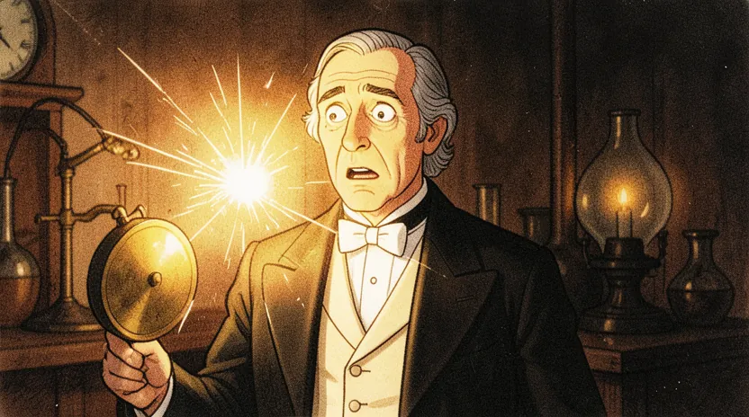
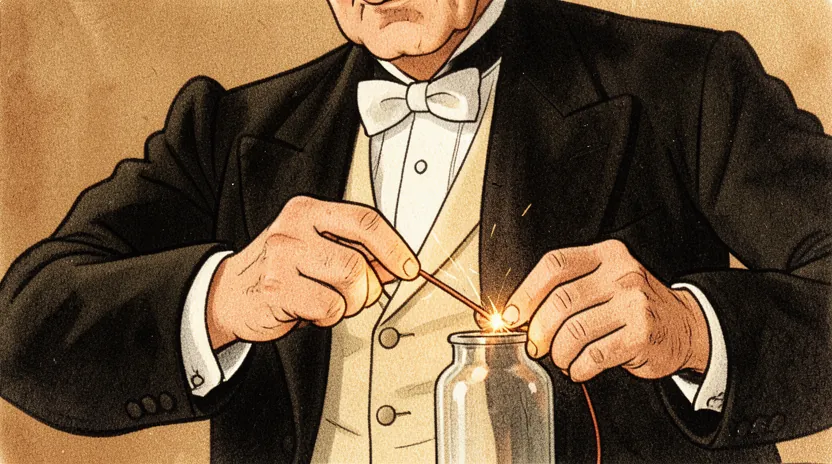
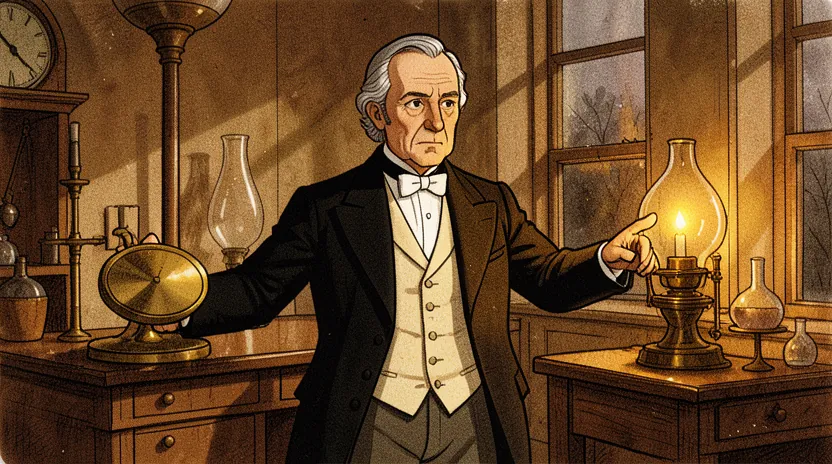
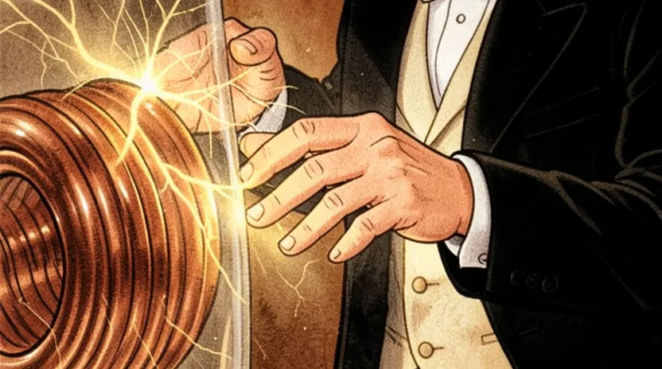
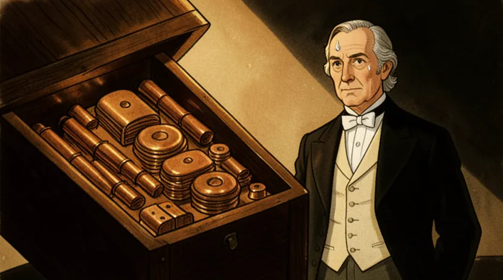
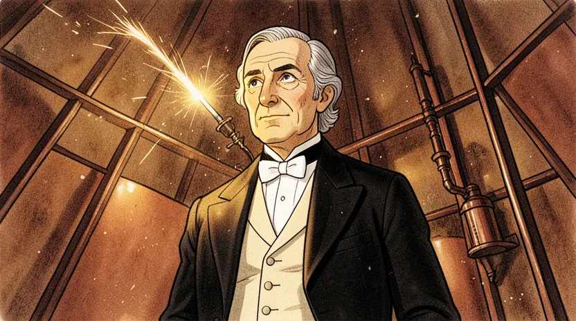
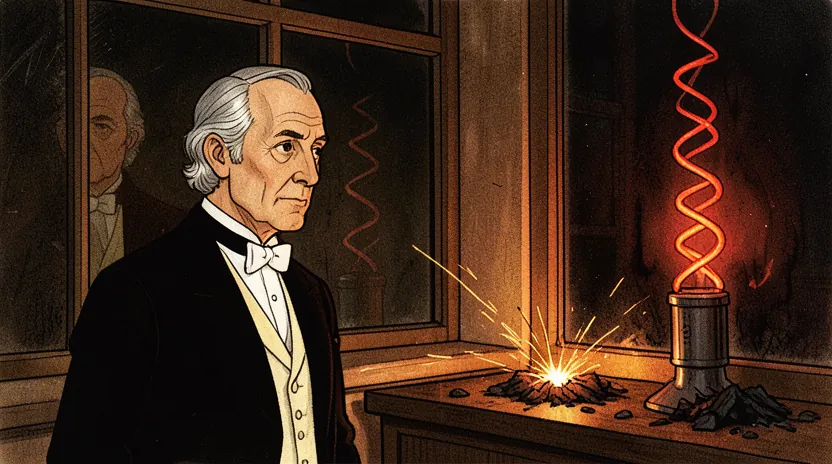
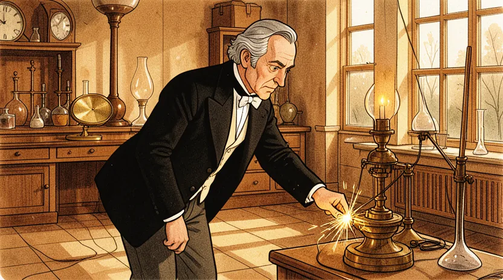

Poiesis · the making
I develop software that reads books — and software that films them.
Two local‑first AI products, built end to end: the model choice, the pipeline, the interface, the installer, the tests. No cloud, no accounts, no per‑word billing.
To empower. Built in the open at endynamoo — it's our software, not mine, and it stays free forever.
01 Rhapsode
It reads to you.
Then it paints what you heard.
Drop in a book, a PDF, a scanned page, a screenshot or a URL. Rhapsode speaks it in a local voice and lights each word as it is said — the highlight follows Kokoro's phoneme timings, not a guess, so the words and the voice never drift apart. It paints a manga still for every beat, and a chapter can be cut into a 1080p film.
OCR is on‑device on all three platforms, and so is translation — through Apple's own framework on macOS, or a local model you already run anywhere else. Search finds a passage across the whole library by words or by meaning, and opening a book pre-reads the first sentences so the first press of play is instant.
- Voice
- Kokoro‑82M · 54 voices · 9 languages
- Reads
- EPUB · PDF · DOCX · RTF · MD · OCR · URL
- Search
- Words or meaning, across the library
- Runs on
- Windows · macOS · Linux · 0.75–3×
Unedited take
Transcript and what is on screen
- 0:00 — the library, two documents. Add document opens the picker.
- 0:10 — The Lantern Keeper's Ledger plays. Kokoro reads; the word being spoken is lit, the sentence sits above the controls.
- 0:31 — Search library for lantern: the hits are segments, marked with the words that matched.
- 0:45 — the chapter film: one still per beat, the narration underneath, scrubbable as a timeline.
- 0:58 — settings: default voice, reading font, text size, theme, stills engine, auto-generate, follow along.
The spoken words are the book's own text — “The lantern keeper counted the ships that evening, as she had done every evening for eleven years.” — read by Kokoro-82M running locally.








02 Opsis
A book becomes
a film you can cut.
Ingest a PDF, an EPUB, a scan. Opsis segments it, storyboards each part into shots and beats, and gives you a timeline instead of a log — picture, narration and script on one clock.
Re‑renders never overwrite. A take sits beside the original,
takes.json says which one the film uses, and switching takes moves
a pointer rather than a file.
- Beat‑level editing
- Region re‑render
- Worker outside the app
- Honest assemble
Alpha footage
What is on screen, shot by shot
- 0:00 – 0:07 — shot 03. A copper disc turns beside a flat spiral coil; sparks flicker along the edge. “Certain effects of the induction of electrical currents have already been recognised…”
- 0:07 – 0:20 — shot 07. The coil under a glass dome, its field pulsing as a magnet slides closer. “I lately arrived at positive results…”
- 0:20 – 0:27 — shot 12. A helix wired to a galvanometer and a ten-plate battery, the needle stubbornly still. “Yet not the slightest sensible reflection of the galvanometer-needle could be observed.”
- 0:27 – 0:35 — shot 17. A hundred-plate battery, and the needle finally moves. “One of these helices was connected with a galvanometer…”
Each shot is one continuous take from the video model, 12 to 31 seconds long; these are the whole sentences at the seams, cut where the narration itself pauses, so the voice finishes before the picture changes. Nothing in the frame is composited or retouched afterwards — the polish pass redraws each still from itself, and the takes are kept, which is why re-renders never overwrite.
One scene, four looks
03 The making
Four things I'd want to see
if someone showed me an AI product.
Started at endynamoo and built in the open by everyone who shows up — issues, pull requests, reviews. Both products are MIT, anyone can fork them, and they stay free forever.
-
01
Local by construction
Weights, audio cache, library and project folders are files on your disk. Nothing is uploaded, nothing is metered, and the app still works with the network cable out.
-
02
One door to the GPU
Measured, not guessed: 10.9 GB peak at 832×480, four steps rather than six, an fp8 text encoder, a quant ladder that trades quality for headroom. The painter refuses to start when the card is full.
-
03
Verified, not vibed
Both suites run on
windows-latest. A changelog that fails CI when it goes stale. A licence audit that opens every weight file and refuses anything without a permissive licence. -
04
Built with agents, answered by tests
Coding agents do most of the typing. What survives is what the suite, the CI run and a silent install test agree on. The agent proposes; the test disposes.
Working on something that
shouldn't leave the machine?
Local‑first by construction: the model choice, the pipeline, the desktop app, the installer that ships it. Both projects are open source and free forever — take the code, open an issue, or bring a problem that looks like this.